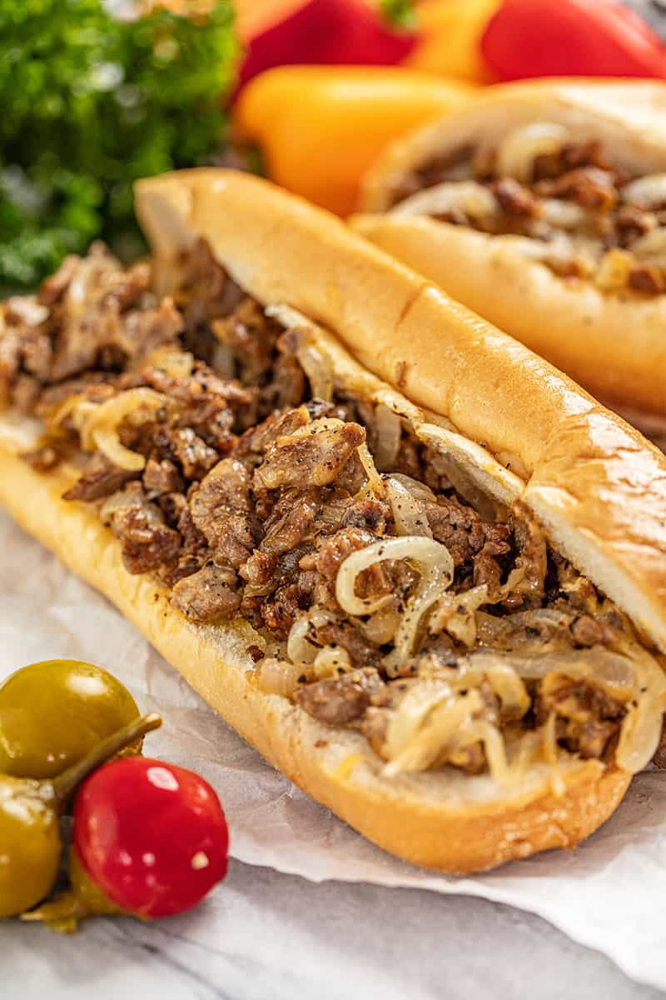

Philly Cheesesteak
PHILLY CHEESE STEAK
The Philly Cheesesteak Sandwich is the best comfort food. Thinly sliced ribeye steak, cheese, onions, and a delicious hoagie roll. This is one of those recipes that everyone loves!
Ingredients (One person)
- 2 beef ribeye steaks or top round
- 1 tablespoon vegetable oil
- salt , to taste
- pepper , to taste
- 4 hoagie rolls (Amoroso Rolls for authenticity)
- 1 medium yellow onion , thinly sliced (optional)
Cheese Options
- 4 slices Provolone cheese (choose 1)
- 4 slices American cheese (choose 1)
- 1/2 cup Cheese Whiz (choose 1)